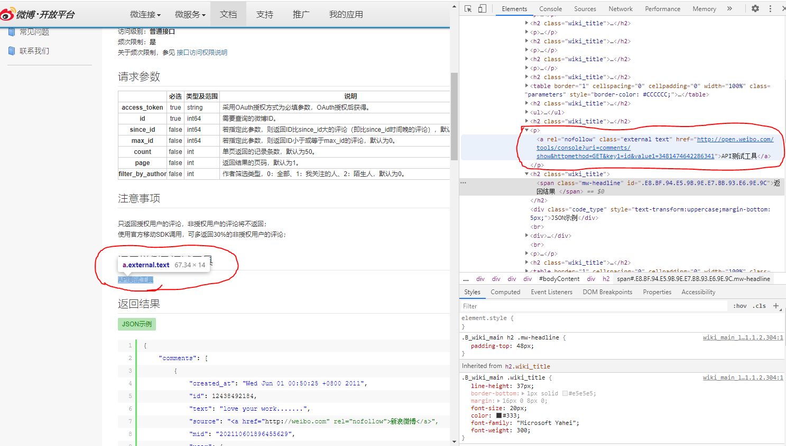

# RESTful API
2000 年 Roy Thomas Fielding 在他博士论文中提出的 RESTful 概念.
即 Representational State Transfer 的缩写，或者叫做 "表现层状态转化".
如果一个构架符合 REST 原则，则称它为 RESTful 的构架
URI, uniform resource identifier, 统一资源标识符，用来唯一的标识一个资源.
URL, uniform resource locator, 统一资源定位器，用来定位某个特定资源.
表现层指的是资源的表现，资源就是网络少具体的信息，可以是文本，图片，歌曲等.
URI 可以用来对应特定的资源，要获取资源，首先要访问 URI, 此时的 URI 还是一个抽象的概念，只用来标识网络中唯一的资源.
URL 就是一种具体的资源，比如一个网址，也就是一个网络资源的地址.
# 表现层 Representation
- 纯文本: Python RESTful API 开发
- HTML: <head><title>Python RESTful API 开发 </title></head>
- JSON:
- jpg, PNG 图片等等.
我们把资源具体呈现出来的形式，叫做表现层
# 状态转移，state Transfer
- HTTP 协议，是一个无状态协议
- GET (获取资源), POST (新建资源，有时候也用来更新资源), PUT (更新资源), DELETE (删除资源)
- 让我们来看一个 RESTful 的请求
curl -X GET https://api.weibo.com/2/users/show.json
# REST 架构设计 6 原则
- Uniform Interface, 统一服务接口，解耦了设计客户端和服务端的接口，让客户端和服务端可以独立升级.
- Stateless, 无状态，客户端请求和服务端响应信息是自包含的，避免某一次请求依赖上一次请求
- Cacheable, 可缓存的，浏览器缓存，提高客户端访问体验，也可减少服务器流量压力.
- Client-Server, 客户端和服务端分离，客户端不包括数据，服务端不包括用户状态，增加服务稳定性，也可对任一端升级.
- Layered System, 分层系统，客户端可以不直接连接服务端，而是通过其它途径连接.
- Code on Demand, 按需编码，客户端和服务端使用统一的接口进行通信，两端都可以用各自的编程语言进行编码，也可以对数据进行再加工，也就可以分工.
# 微博 Restful 介绍，现在打开 API 测试工具不太管用了
国内微博率先使用 RESTful 构架，并且还公开了开放平台。微博开放平台一些操作.
微博开放平台: https://open.weibo.com/
- 选择 chrome 浏览器进入之后可选择上面的
文档，然后选择左边的微博API查看相应接口 - 随便选择一个接口点击进入，点击
API测试工具没反应，可以鼠标右击API测试工具选择检查N, 点开 <p></p > 标签，然后点击里面的链接地址，可以打开 API 测试工具.

# Flask
Flask 官网: http://flask.pocoo.org/
Flask 中文版: https://dormousehole.readthedocs.io/en/latest/
Flask 支持的扩展插件: https://flask.palletsprojects.com/en/1.1.x/extensions/
# 工具介绍
将一串 json 转换为有缩进的格式
https://www.bootcdn.cn/jsonlint/
# github API schema
https://developer.github.com/v3/#schema
Schema
All API access is over HTTPS, and accessed from https://api.github.com. All data is sent and received as JSON.
curl -i https://api.github.com/users/octocat/orgs | |
HTTP/1.1 200 OK | |
Server: nginx | |
Date: Fri, 12 Oct 2012 23:33:14 GMT | |
Content-Type: application/json; charset=utf-8 | |
Connection: keep-alive | |
Status: 200 OK | |
ETag: "a00049ba79152d03380c34652f2cb612" | |
X-GitHub-Media-Type: github.v3 | |
X-RateLimit-Limit: 5000 | |
X-RateLimit-Remaining: 4987 | |
X-RateLimit-Reset: 1350085394 | |
Content-Length: 5 | |
Cache-Control: max-age=0, private, must-revalidate | |
X-Content-Type-Options: nosniff |
# Simple Samples
from flask import Flask | |
app = Flask(__name__) | |
@app.route('/') | |
def hello_world(): | |
return "Hello World!!!" | |
@app.route('/index/<user>') | |
def hello_user(user): | |
return "Hello %s" % user | |
@app.route('/productpage') | |
def hello_productpage(): | |
return "Hello productpage!!!" | |
# POST方法浏览器输入出错可以通过命令行方式访问, 如下指定POST方式访问 | |
# pipenv shell | |
# python app.py | |
# curl -X POST 127.0.0.1:9900/index --noproxy 127.0.0.1 | |
@app.route('/index', methods=['POST']) | |
def hello_post(): | |
return "Hello POST Methods!!!" | |
if __name__ == "__main__": | |
app.run(host='127.0.0.1', port=9900, debug=True) |
# 教程视频
Restful API
NodeJS: https://www.bilibili.com/video/BV1KE411j7WX?p=4
NodeJS: https://www.bilibili.com/video/BV1Hh411Z7Ra?from=search&seid=18040937623809243636
python Flask: https://www.bilibili.com/video/BV1Rf4y127Cy?p=6
java: https://www.bilibili.com/video/BV1et411T7SS?p=8
java Spring boot: https://study.163.com/course/introduction.htm?courseId=1005213034#/courseDetail?tab=1